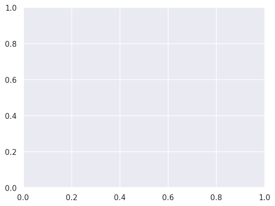
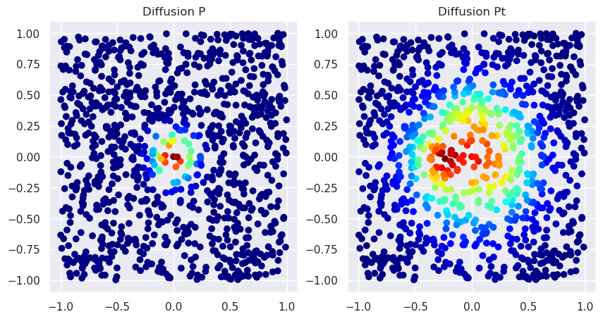
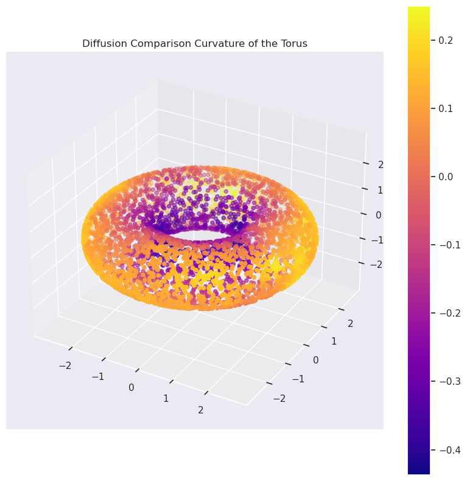
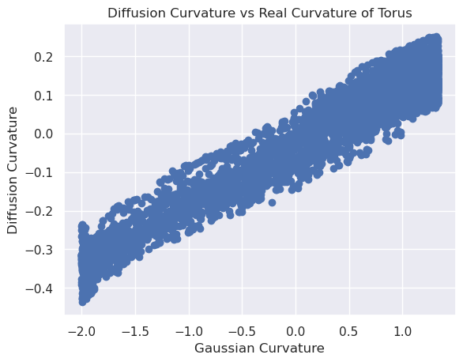
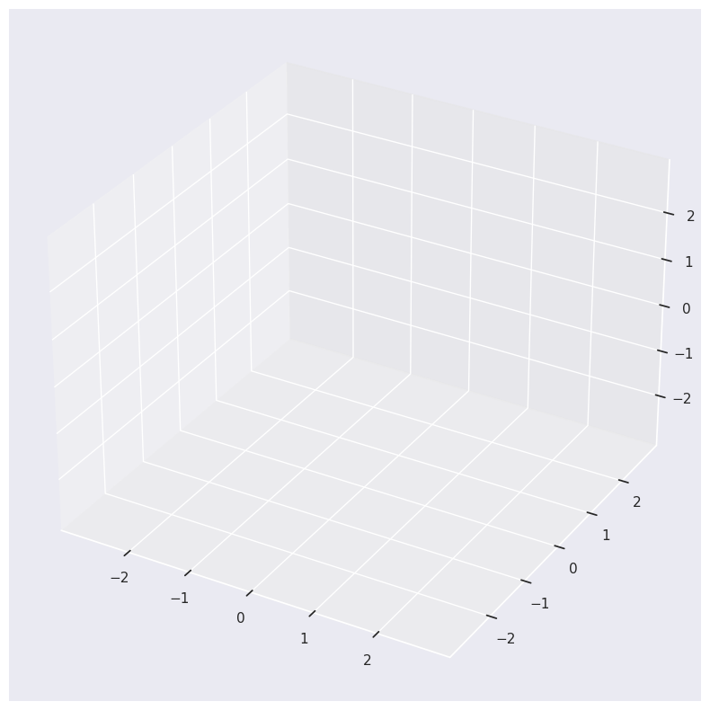
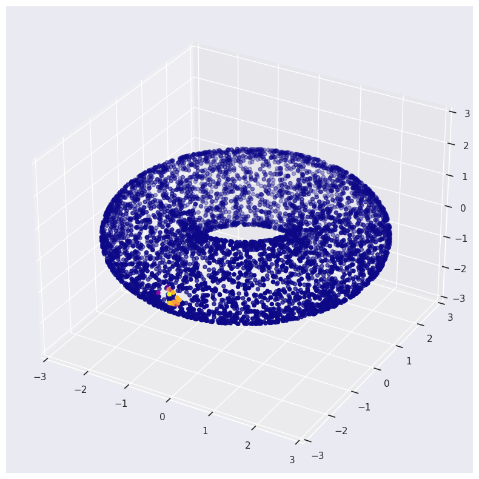
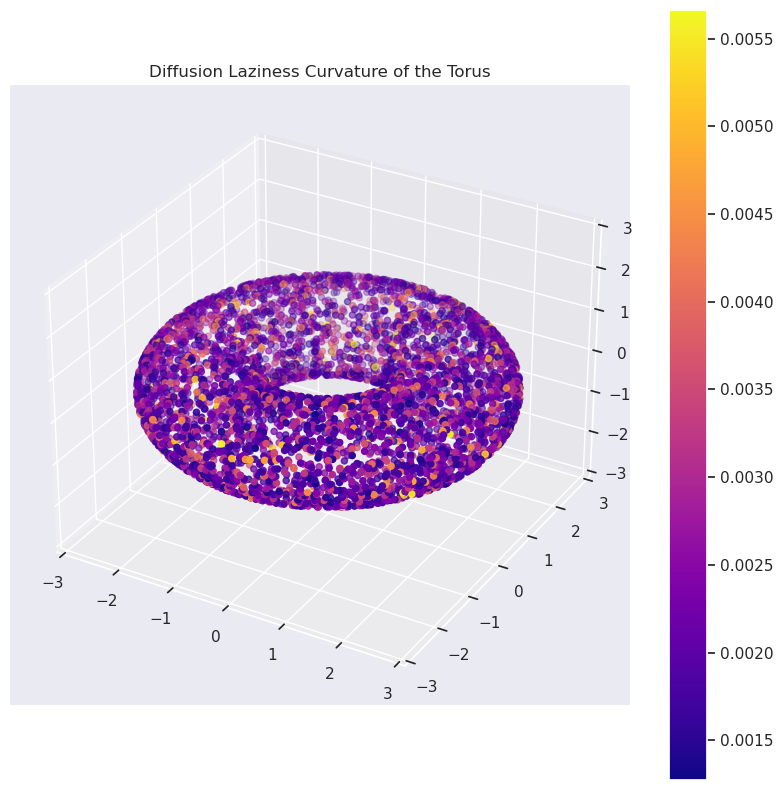
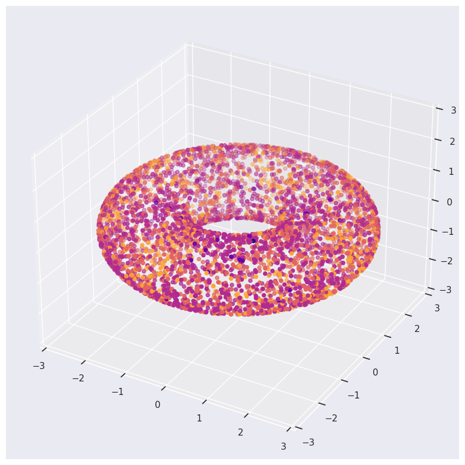
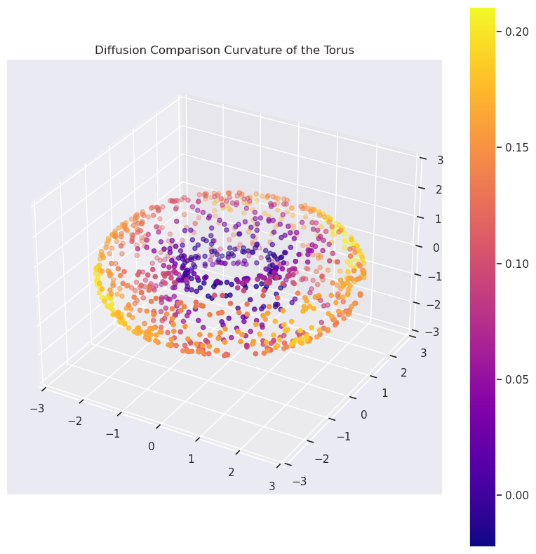

from diffusion_curvature.datasets import torusImplementation (PyGSP + JAX)
::: {#cell-1 .cell 0=‘d’ 1=‘e’ 2=‘f’ 3=‘a’ 4=‘u’ 5=‘l’ 6=‘t’ 7=’_’ 8=‘e’ 9=‘x’ 10=‘p’ 11=’ ’ 12=‘c’ 13=‘o’ 14=‘r’ 15=‘e’}
## Standard libraries
import os
import math
import numpy as np
import time
# Configure environment
os.environ['XLA_PYTHON_CLIENT_PREALLOCATE']='false' # Tells Jax not to hog all of the memory to this process.
## Imports for plotting
import matplotlib.pyplot as plt
%matplotlib inline
from IPython.display import set_matplotlib_formats
# set_matplotlib_formats('svg', 'pdf') # For export
from matplotlib.colors import to_rgba
import seaborn as sns
sns.set()
## Progress bar
from tqdm.auto import tqdm
## project specifics
import diffusion_curvature
from diffusion_curvature.kernels import *
from diffusion_curvature.datasets import *
import jax
import jax.numpy as jnp
jax.devices()
%load_ext autoreload
%autoreload 2The autoreload extension is already loaded. To reload it, use:
%reload_ext autoreload:::
Curvature computations on any graphtools graph
This notebook implements diffusion curvature atop the popular PyGSP library. To compute the curvature of any PyGSP graph, simply instantiate a DiffusionCurvature object with your choice of parameters, and pass the graphtools graph through as input.
What follows is a literate implementation, showing the steps of the algorithm applied to our old friend, the torus.
The implementation of Diffusion Curvature involves several big pieces, each of which can be performed with different strategies:
- Simulating heat diffusion on the manifold, either via powering the diffusion matrix, or by Chebyshev approximation of the heat equation using the graph laplacian.
- Computing the “spreads” of diffusion. This can be done either via the entropy or the Wasserstein distance.
- Constructing a comparison space of approximately the same sampling as the input graph.
- (Experimental) Verification that the above is working by differentiating the spreads of diffusion over time.
We implement everything generically in JAX (a high performance numpy replacement, which can compile to the GPU), treating each of the above as modules that can be parametrically tuned. Functional programming is our game: each function takes a graph object as input and returns an updated graph object with the required quantities computed.
# Our sample dataset for testing the rest of the notebook
X_torus, ks_torus = torus(5000,use_guide_points=True)Graph Construction
Our ‘Graphs’ notebook has code to create PyGSP graphs from pointcloud data, in several varieties. We also provide heuristics to sanity check the graphs, as well as choose the optimal parameters. TODO: MAKE THESE HEURISTICS
from diffusion_curvature.graphs import get_alpha_decay_graph, get_knn_graph, get_scanpy_graphG_torus = get_alpha_decay_graph(X_torus,knn=15,decay=20,anisotropy=1.0)The Diffusion Curvature Class
::: {#cell-11 .cell 0=‘e’ 1=‘x’ 2=‘p’ 3=‘o’ 4=‘r’ 5=‘t’}
import pygsp
import jax
import jax.numpy as jnp
import numpy as np
from fastcore.all import *
import skdim
import scipy
from sklearn.preprocessing import normalize
from inspect import getfullargspec
from typing import Callable, Literal, get_args, get_origin
import graphtools
from tqdm.auto import trange, tqdm
from jax.experimental import sparse
from diffusion_curvature.graphs import diff_aff, diff_op, diffusion_matrix_from_affinities
from diffusion_curvature.heat_diffusion import heat_diffusion_on_signal, kronecker_delta, jax_power_matrix, heat_diffusion_from_dirac
from diffusion_curvature.diffusion_laziness import wasserstein_spread_of_diffusion, entropy_of_diffusion
from diffusion_curvature.distances import phate_distances_differentiable
from diffusion_curvature.comparison_space import EuclideanComparisonSpace, fit_comparison_space_model, euclidean_comparison_graph, construct_ndgrid_from_shape, diffusion_coordinates, load_average_entropies
from diffusion_curvature.clustering import enhanced_spectral_clustering
from diffusion_curvature.normalizing_flows import neural_flattener
from diffusion_curvature.vne import optimal_t_via_vne
from diffusion_curvature.utils import random_jnparray
import diffusion_curvature
import torch
# import deepdish
import h5py
_DIFFUSION_TYPES = Literal['diffusion matrix','heat kernel']
_LAZINESS_METHOD = Literal['Wasserstein','Entropic', 'Laziness']
_FLATTENING_METHOD = Literal['Neural', 'Fixed', 'Mean Fixed']
_COMPARISON_METHOD = Literal['Ollivier', 'Subtraction']
def graphtools_graph_from_data(X):
return graphtools.Graph(X, anisotropy=1, knn=15, decay=None).to_pygsp()
from diffusion_curvature.kernels import gaussian_kernel
from dataclasses import dataclass
@dataclass
class SimpleGraph:
W: np.ndarray
def get_adaptive_graph(X, k=10, alpha = 0):
W = gaussian_kernel(
X,
kernel_type='adaptive',
k = k,
anisotropic_density_normalization = alpha,
)
G = pygsp.graphs.Graph(W)
return G
class DiffusionCurvature():
def __init__(
self,
diffusion_type:_DIFFUSION_TYPES = 'diffusion matrix', # Either ['diffusion matrix','heat kernel']
laziness_method: _LAZINESS_METHOD = 'Entropic', # Either ['Wasserstein','Entropic', 'Laziness']
flattening_method: _FLATTENING_METHOD = 'Fixed', # Either ['Neural', 'Fixed', 'Mean Fixed']
comparison_method: _COMPARISON_METHOD = 'Subtraction', # Either ['Ollivier', 'Subtraction']
graph_former = get_adaptive_graph,
dimest = None, # Dimension estimator to use. If none, defaults to kNN.
points_per_cluster = None, # Number of points to use in each cluster when constructing comparison spaces. Each comparison space takes about 20sec to construct, and has different sampling and dimension. If 1, constructs a different comparison space for each point; if None, constructs just one comparison space.
comparison_space_size_factor = 1, # Number of points in comparison space is the number of points in the original space divided by this factor.
use_grid=False, # If True, uses a grid of points as the comparison space. If False, uses a random sample of points.
max_flattening_epochs=50,
aperture = 20, # if using Laziness flattening, this controls the size of neighborhood over which the return probability is averaged.
smoothing=1,
comparison_space_file = "../data/entropies_averaged.h5",
verbose = False,
):
store_attr()
self.D = None
self.graph_former = graph_former
if self.dimest is None:
self.dimest = skdim.id.KNN()
if self.flattening_method == "Mean Fixed":
self.SGT = load_average_entropies(comparison_space_file)
# deepdish.io.load("../data/sgt_peppers_averaged_flat_entropies.h5") # dict of dim x knn x ts containing precomputed flat entropies.
def unsigned_curvature(
self,
G:pygsp.graphs.Graph, # PyGSP input Graph
t:int, # Scale at which to compute curvature; number of steps of diffusion.
idx=None, # the index at which to compute curvature. If None, computes for all points. TODO: Implement
# The below are used internally
_also_return_first_scale = False, # if True, calculates the laziness measure at both specified t and t=1. The distances (if used) are calcualted with the larger t.
D = None, # Supply manifold distances yourself to override their computation. Only used with the Wasserstein laziness method.
):
n = G.W.shape[0]
# Compute diffusion matrix
match self.diffusion_type:
case 'diffusion matrix':
P = normalize(G.W, norm="l1", axis=1)
if type(P) == scipy.sparse._csr.csr_matrix:
P = P.todense()
# diffusion_matrix_from_affinities(G.W)
# P = diff_op(G).todense() # is sparse, by default
self.P = jnp.array(P)
if t is None: t = optimal_t_via_vne(P)
self.Pt = jax_power_matrix(self.P,t)
case 'heat kernel':
if t is None:
normal_P = normalize(G.W, norm="l1", axis=1)
if type(normal_P) == scipy.sparse._csr.csr_matrix:
normal_P = normal_P.todense()
normal_P = jnp.array(normal_P)
t = optimal_t_via_vne(normal_P)
Ps = heat_diffusion_from_dirac(G, idx=idx, t=[1,t])
# signal = jnp.eye(n) if idx is not None else kronecker_delta(n,idx=idx)
# Ps = heat_diffusion_on_signal(G, signal, [1,t])
self.P = Ps[0]
self.Pt = Ps[1]
case _:
raise ValueError(f"Diffusion Type {self.diffusion_type} not in {_DIFFUSION_TYPES}")
match self.laziness_method:
case "Wasserstein":
if D is None: D = phate_distances_differentiable(self.Pt) #TODO: Could be more efficient here if there's an idx
laziness = wasserstein_spread_of_diffusion(D,self.Pt) if idx is None else wasserstein_spread_of_diffusion(D[idx],self.Pt[idx])
if _also_return_first_scale: laziness_nought = wasserstein_spread_of_diffusion(D,self.P)
case "Entropic":
laziness = entropy_of_diffusion(self.Pt) if idx is None else entropy_of_diffusion(self.Pt[idx])
# laziness = entropy_of_diffusion(self.P) / entropy_of_diffusion(self.Pt)
if _also_return_first_scale: laziness_nought = entropy_of_diffusion(self.P)
case "Laziness":
thresholds = jnp.partition(self.P,-self.aperture)[:,-self.aperture] # aperture controls the size of the neighborhood in which laziness is measured
P_thresholded = (self.P >= thresholds[:,None]).astype(int)
near_neighbors_only = self.Pt * P_thresholded
laziness_aggregate = jnp.sum(near_neighbors_only,axis=1)
# divide by the number of neighbors diffused to
ones_remaining = jnp.ones_like(P_thresholded) * P_thresholded # is this needed? Isn't ones_remaining identical to P_thresholded?
local_density = jnp.sum(ones_remaining,axis=1)
if self.verbose: print("local density",local_density)
local_density = local_density.at[local_density==0].set(1) # In case of isolated points, replace local density of 0 with 1. THe laziness will evaluate to zero.
laziness_aggregate = laziness_aggregate / local_density
laziness = laziness_aggregate
if self.smoothing: # TODO there are probably more intelligent ways to do this smoothing
# Local averaging to counter the effects local density
if self.verbose: print("Applying smoothing...")
smoothing_P_powered = jnp.linalg.matrix_power(self.P,self.smoothing)
average_laziness = smoothing_P_powered @ laziness_aggregate[:,None]
laziness = average_laziness.squeeze()
if _also_return_first_scale: laziness_nought = jnp.sum(self.P * P_thresholded,axis=1)
case _:
raise ValueError(f"Laziness Method {self.laziness_method} not in {_LAZINESS_METHOD}")
if _also_return_first_scale:
return laziness, laziness_nought, self.P, self.Pt, t
else:
return laziness
def curvature(
self,
G:pygsp.graphs.Graph, # Input Graph
t:int, # Scale; if none, finds the knee-point of the spectral entropy curve of the diffusion operator
idx=None, # the index at which to compute curvature. If None, computes for all points.
dim = None, # the INTRINSIC dimension of your manifold, as an int for global dimension or list of pointwise dimensions; if none, tries to estimate pointwise.
knn = 15, # Number of neighbors used in construction of graph;
D = None, # Supply manifold distances yourself to override their computation. Only used with the Wasserstein laziness method.
):
fixed_comparison_cache = {} # if using a fixed comparison space, saves by dimension
def get_flat_spreads(dimension, jump_of_diffusion, num_points_in_comparison, cluster_idxs, verbose=False):
match self.flattening_method:
case "Fixed":
if dimension not in fixed_comparison_cache.keys():
if self.use_grid:
Rn = construct_ndgrid_from_shape(dimension, int(num_points_in_comparison**(1/dimension)))
else:
Rn = jnp.concatenate([jnp.zeros((1,dim)), 2*random_jnparray(num_points_in_comparison-1, dim)-1])
# construct a lattice in dim dimensions of num_points_in_comparison points
G = self.graph_former(Rn)
# G = graphtools.Graph(Rn, anisotropy=1, knn=knn, decay=None,).to_pygsp()
if self.laziness_method == "Wasserstein":
fixed_comparison_cache[dimension] = (G, scipy.spatial.distance_matrix(Rn,Rn))
else:
fixed_comparison_cache[dimension] = (G, None)
G_euclidean, D_euclidean = fixed_comparison_cache[dimension]
# print(type(G_euclidean))
# print(G_euclidean.W)
fs = self.unsigned_curvature(G_euclidean,t,idx=0,D=D_euclidean)
if self.verbose: print(f"comparison entropy is {fs}")
return fs
case "Kernel Matching":
model = EuclideanComparisonSpace(dimension=dimension, num_points=num_points_in_comparison, jump_of_diffusion=jump_of_diffusion,)
params = fit_comparison_space_model(model, max_epochs=1000)
if verbose: print(params)
euclidean_stuffs = model.apply(params) # dictionary containing A, P, D
W = fill_diagonal(euclidean_stuffs['A'],0)
G_euclidean = pygsp.graphs.Graph(
W = W,
lap_type = G.lap_type, # type of laplacian; we'll use the same as inputted.
)
fs = self.unsigned_curvature(G_euclidean,t,idx=0, D=euclidean_stuffs['D'])
return fs
case "Neural":
device = torch.device('cuda' if torch.cuda.is_available() else 'cpu')
NF = neural_flattener(device=device, max_epochs=self.max_flattening_epochs)
# for now, we assume that the neural flattener is only used with single point clusters
# TODO: generalize to multiple point clusters by finding centroid
distances_to_manfred = jnp.sum(jnp.array(
[jnp.linalg.norm(self.diff_coords - self.diff_coords[clustidx],axis=1) for clustidx in cluster_idxs]
),axis=1)
idx_closest_to_manfred = jnp.argsort(distances_to_manfred)[:num_points_in_comparison]
diff_coords_of_comparison_space = self.diff_coords[idx_closest_to_manfred]
flattened_diff_coords = NF.fit_transform(
torch.tensor(diff_coords_of_comparison_space.tolist())
)
# construct graph out of these flattened coordinates
G_euclidean = graphtools.Graph(flattened_diff_coords, knn=15, decay=None, anisotropy=1).to_pygsp()
fs = self.unsigned_curvature(G_euclidean, t, idx=0)
return fs
# return G_euclidean, None # TODO: compute diffusion distances
case "Mean Fixed":
dimension_checks_out = dimension in self.SGT.keys()
knn_checks_out = knn in self.SGT[dimension].keys() if dimension_checks_out else False
t_checks_out = t in self.SGT[dimension][knn].keys() if knn_checks_out else False
if not (dimension_checks_out and knn_checks_out and t_checks_out):
# compute the old way
print("Flat space not precomputed; computing now")
self.flattening_method = "Fixed"
return get_flat_spreads(
dimension = dimension,
jump_of_diffusion = jump_of_diffusion,
num_points_in_comparison = num_points_in_comparison,
cluster_idxs = cluster_idxs,
verbose=verbose
)
else:
return self.SGT[dimension][knn][t]
# Start by estimating the manifold's unsigned curvature, i.e. spreads of diffusion
manifold_spreads, manifold_spreads_nought, P, Pt, t = self.unsigned_curvature(G,t,idx, _also_return_first_scale=True, D = D)
if self.verbose: print(f"Manifold spreads are {manifold_spreads}")
# print(manifold_spreads_nought.shape)
n = G.W.shape[0]
if dim is None: # The dimension wasn't supplied; we'll estimate it pointwise
print("estimating local dimension of each point... may take a while")
ldims = self.dimest.fit_pw(
G.data, #TODO: Currently this requires underlying points!
n_neighbors = 100,
n_jobs = 1)
dims_per_point = np.round(ldims.dimension_pw_).astype(int)
else: # the dimension *was* supplied, but it may be either a single global dimension or a local dimension for each point
if isinstance(dim, int):
dims_per_point = jnp.ones(G.W.shape[0], dtype=int)*dim
else:
dims_per_point = dim
if self.flattening_method == "Neural":
# we need to compute coordinates to flatten. We'll use diffusion maps for this.
self.diff_coords = diffusion_coordinates(G, t=t)[:,:dim]
flat_spreads = jnp.zeros(n)
num_points_in_comparison = n // self.comparison_space_size_factor # TODO: Can surely find a better heuristic here
num_clusters = n // self.points_per_cluster if self.points_per_cluster is not None else 1
if num_clusters == n:
# Construct a separate comparison space for each point
cluster_labels = jnp.arange(n)
elif num_clusters == 1:
# Use just one comparison space for the whole dataset
cluster_labels = jnp.zeros(n)
elif idx is not None:
cluster_labels = jnp.ones(n) # if a single index is supplied, there's only one cluster.
cluster_labels = cluster_labels.at[idx].set(0)
num_clusters = 1
else:
# Cluster dataset into specified num_clusters, construct separate comparison spaces for each.
cluster_labels = enhanced_spectral_clustering(G, manifold_spreads, dim=dim, num_clusters=num_clusters, )
for i in range(num_clusters):
cluster_idxs = jnp.where(cluster_labels==i)[0]
average_dim_in_cluster = int(jnp.round(jnp.mean(dims_per_point[cluster_idxs])))
if self.verbose: print(f"{average_dim_in_cluster=}")
average_spread_in_cluster = jnp.mean(manifold_spreads_nought[cluster_idxs])
fs = get_flat_spreads(
dimension = average_dim_in_cluster,
jump_of_diffusion = average_spread_in_cluster,
num_points_in_comparison = num_points_in_comparison,
cluster_idxs = cluster_idxs,
verbose=True
)
# fs = self.unsigned_curvature(G_euclidean,t,idx=0)
flat_spreads = flat_spreads.at[cluster_idxs].set(
fs
)
match self.comparison_method:
case "Ollivier":
ks = 1 - manifold_spreads/flat_spreads
case "Subtraction":
ks = flat_spreads - manifold_spreads
case _:
raise ValueError(f'Comparison method must be in {_COMPARISON_METHOD}')
if idx is not None: ks = ks[idx]
return ks #, flat_spreads, manifold_spreads, P, Pt
def fill_diagonal(a, val):
assert a.ndim >= 2
i, j = jnp.diag_indices(min(a.shape[-2:]))
return a.at[..., i, j].set(val):::
Verification
With Approximated Heat Diffusion
X_torus,ks = torus(1000,use_guide_points=True)
G_torus = get_adaptive_graph(X_torus)2024-01-19 10:00:13,836:[WARNING](pygsp.graphs.graph.check_weights): The main diagonal of the weight matrix is not 0!G_torus.W.shape(1000, 1000)DC = DiffusionCurvature(
diffusion_type = "heat kernel",
laziness_method="Entropic",
flattening_method="Fixed",
comparison_method="Subtraction",
points_per_cluster=None, # construct separate comparison spaces around each point
comparison_space_size_factor=1,
use_grid=False,
)Rn = np.random.rand(400,2)
Grn = DC.graph_former(Rn)2024-01-19 09:58:21,146:[WARNING](pygsp.graphs.graph.check_weights): The main diagonal of the weight matrix is not 0!Grn.W.shape(400, 400)ks_torus = DC.curvature(G_torus, t=None, dim=2, knn=15)plot_3d(X_torus,ks_torus,colorbar=True,title='Diffusion Comparison Curvature of the Torus')plt.scatter(ks, ks_torus)
plt.title("Diffusion Curvature vs Real Curvature of Torus")
plt.xlabel("Gaussian Curvature")
plt.ylabel("Diffusion Curvature")ValueError: x and y must be the same size
X_sphere, ks_sphere = sphere(1000,use_guide_points=True)
G_sphere = get_adaptive_graph(X_sphere)
DC = DiffusionCurvature(
laziness_method="Entropic",
flattening_method="Fixed",
comparison_method="Subtraction",
graph_former = get_adaptive_graph,
)
sphere_entropy = DC.unsigned_curvature(G_sphere, t=25)[0]
print("Sphere entropies are ", sphere_entropy)
DC.curvature(G_sphere,t=25,dim=2)Sphere entropies are 6.655565Array([0.11335707, 0.06487274, 0.05884409, 0.05740404, 0.0642314 ,
0.06366301, 0.05483818, 0.06147385, 0.08759928, 0.05728197,
0.06411648, 0.08686781, 0.05503988, 0.09050846, 0.08116913,
0.03181219, 0.12897491, 0.08714104, 0.06678724, 0.05969143,
0.07953739, 0.07100677, 0.06172848, 0.08681393, 0.07116699,
0.09487152, 0.08594608, 0.06987953, 0.08752728, 0.08381319,
0.10403967, 0.09759521, 0.08669853, 0.07118797, 0.05764246,
0.09759665, 0.10303497, 0.0868988 , 0.10510015, 0.06851149,
0.09032917, 0.07850552, 0.04110861, 0.05405045, 0.05058098,
0.06604719, 0.10579872, 0.0817647 , 0.07427454, 0.06593466,
0.08328724, 0.07362413, 0.09141922, 0.10187674, 0.05985785,
0.09553814, 0.06983089, 0.04920149, 0.07766151, 0.09164715,
0.07969284, 0.04097891, 0.0702467 , 0.06564188, 0.08948517,
0.0845356 , 0.09049368, 0.10028028, 0.0979805 , 0.0927496 ,
0.08528709, 0.08123779, 0.08337545, 0.06309032, 0.08763933,
0.09051132, 0.05973339, 0.09566021, 0.06791067, 0.06535816,
0.06742287, 0.05220127, 0.08181667, 0.07960033, 0.08837652,
0.03656912, 0.09111023, 0.10952806, 0.05620575, 0.09327269,
0.12839031, 0.13030815, 0.09196281, 0.07912397, 0.06233597,
0.07339478, 0.11855936, 0.07903099, 0.09766197, 0.05419445,
0.08125305, 0.06524277, 0.05321598, 0.08076906, 0.08762741,
0.06943989, 0.13047361, 0.04755688, 0.08558178, 0.07583284,
0.07408619, 0.07964134, 0.07853556, 0.08562994, 0.08383465,
0.07005501, 0.08957243, 0.08760738, 0.10600567, 0.07975292,
0.07248878, 0.08154964, 0.08699846, 0.11436415, 0.07627773,
0.06837606, 0.07192278, 0.06020164, 0.10035324, 0.05051041,
0.08448887, 0.11090851, 0.07821178, 0.09141922, 0.08282757,
0.05962753, 0.08533669, 0.09196186, 0.06243706, 0.07434845,
0.06517315, 0.12801504, 0.07238007, 0.08558321, 0.08384991,
0.11973953, 0.05550003, 0.06878376, 0.07501745, 0.07222176,
0.06437016, 0.07418203, 0.08648586, 0.07268524, 0.09285355,
0.1021452 , 0.09206486, 0.05852842, 0.11701012, 0.09866571,
0.06476784, 0.05934143, 0.06882191, 0.10729408, 0.08915997,
0.07189846, 0.06034374, 0.08197355, 0.09082222, 0.07134485,
0.09181786, 0.07562733, 0.08058929, 0.08986425, 0.10321665,
0.08199501, 0.11547995, 0.08556461, 0.06375408, 0.09595585,
0.07134056, 0.05936003, 0.10069847, 0.0920248 , 0.0682478 ,
0.08965921, 0.10433626, 0.07322884, 0.09017277, 0.07954979,
0.06465578, 0.08976555, 0.08947659, 0.10598612, 0.07743883,
0.07683754, 0.06537199, 0.09267139, 0.09297276, 0.05983925,
0.08270025, 0.08384848, 0.0358305 , 0.07146597, 0.05775452,
0.06509686, 0.08713055, 0.11515236, 0.06367111, 0.05358601,
0.07762241, 0.06050825, 0.1136961 , 0.06980181, 0.12893963,
0.08900356, 0.06705284, 0.09195375, 0.09817123, 0.05263329,
0.09058428, 0.06303692, 0.05026817, 0.08079863, 0.06897879,
0.07525492, 0.08952808, 0.06900883, 0.0867424 , 0.08868504,
0.10039949, 0.06827116, 0.05599594, 0.09328413, 0.06389952,
0.09408426, 0.08490419, 0.0847168 , 0.10274601, 0.09403706,
0.10481405, 0.07272911, 0.07094669, 0.07708597, 0.11218977,
0.07840681, 0.12765694, 0.07936001, 0.06864929, 0.08695459,
0.05975056, 0.12005091, 0.11665201, 0.08816004, 0.07531261,
0.07729721, 0.11365318, 0.13855743, 0.07913589, 0.0781889 ,
0.10389757, 0.12170601, 0.08514786, 0.075634 , 0.121315 ,
0.06645107, 0.07601118, 0.060853 , 0.07239103, 0.08244514,
0.10001373, 0.06660032, 0.06484604, 0.08138657, 0.09447384,
0.06897068, 0.06223488, 0.09180164, 0.09990549, 0.06732178,
0.09585047, 0.08702803, 0.06343746, 0.08570433, 0.09392262,
0.10494709, 0.07350254, 0.05890846, 0.09878397, 0.07083607,
0.07613325, 0.07218266, 0.08658457, 0.06997585, 0.09469509,
0.06267452, 0.12497616, 0.08941078, 0.06324816, 0.0883131 ,
0.10312557, 0.05045891, 0.05594158, 0.0553751 , 0.03766966,
0.07313347, 0.07922935, 0.06505299, 0.06317997, 0.06878376,
0.07766485, 0.09556961, 0.06594181, 0.07470226, 0.04703426,
0.06539726, 0.06102371, 0.08212614, 0.064394 , 0.07518148,
0.08916044, 0.07245684, 0.10277367, 0.06812429, 0.11281776,
0.05020905, 0.12582445, 0.0698595 , 0.07491112, 0.11322117,
0.08710861, 0.10459757, 0.07035112, 0.09850311, 0.08914948,
0.05855513, 0.07848549, 0.07558823, 0.09352541, 0.09365845,
0.10718155, 0.0929184 , 0.07888508, 0.05945444, 0.06639957,
0.06795168, 0.07767439, 0.08326626, 0.06954002, 0.12832832,
0.05132866, 0.05683613, 0.08876944, 0.08475208, 0.06815004,
0.06830788, 0.06574154, 0.0684433 , 0.09315252, 0.06450844,
0.08112144, 0.07032013, 0.07417583, 0.0657177 , 0.06024456,
0.07568312, 0.06376934, 0.07691145, 0.09345627, 0.05396366,
0.07360935, 0.06457043, 0.08803082, 0.12340546, 0.0430851 ,
0.07584906, 0.0856905 , 0.0761919 , 0.0712986 , 0.05959988,
0.09634113, 0.0748415 , 0.0676074 , 0.06634808, 0.10871696,
0.08019495, 0.07570696, 0.10012627, 0.09920406, 0.10649729,
0.06039715, 0.08942413, 0.06424427, 0.06639147, 0.0746727 ,
0.09383821, 0.07926512, 0.0873909 , 0.08634281, 0.08192921,
0.09456968, 0.11109734, 0.07531071, 0.04559326, 0.08145332,
0.06811523, 0.09026051, 0.11224699, 0.06617832, 0.09417629,
0.06792831, 0.08418083, 0.08686972, 0.12643385, 0.07878637,
0.11114264, 0.04911709, 0.1169157 , 0.09134436, 0.08148003,
0.09504318, 0.06370163, 0.08488941, 0.05987835, 0.13197803,
0.05270767, 0.07995224, 0.10610676, 0.09008026, 0.06410074,
0.06399536, 0.09253311, 0.08636713, 0.08924484, 0.12523079,
0.06997776, 0.05615473, 0.07116127, 0.10870552, 0.07948971,
0.08502913, 0.08753777, 0.10682964, 0.06801271, 0.08881092,
0.0724144 , 0.07473373, 0.05977488, 0.0730381 , 0.08695221,
0.08825588, 0.06974459, 0.0753336 , 0.09509182, 0.06197834,
0.12962246, 0.11076736, 0.066998 , 0.08677197, 0.07073832,
0.06846046, 0.05604649, 0.06168699, 0.09479332, 0.08106232,
0.04374695, 0.0801959 , 0.050807 , 0.04700708, 0.09164667,
0.10939503, 0.07735872, 0.02810955, 0.07032681, 0.07296419,
0.07951736, 0.1094861 , 0.04912567, 0.05851364, 0.06599331,
0.08242798, 0.07835865, 0.09446859, 0.06521273, 0.04284096,
0.06164026, 0.05933475, 0.08355713, 0.10876608, 0.08352518,
0.05979013, 0.09145069, 0.06964779, 0.06091166, 0.06638336,
0.05623055, 0.0547452 , 0.06066704, 0.06565952, 0.08337498,
0.08589268, 0.04935074, 0.05903912, 0.09692955, 0.11697578,
0.07919025, 0.05324936, 0.07700825, 0.08991051, 0.05273294,
0.06016684, 0.10387182, 0.06958485, 0.07950401, 0.06951571,
0.10289955, 0.12402725, 0.09953022, 0.09806585, 0.1200881 ,
0.06803513, 0.08253002, 0.08372974, 0.09606314, 0.1183157 ,
0.08200359, 0.09499502, 0.12273884, 0.07668495, 0.08426666,
0.07928753, 0.12814236, 0.09317827, 0.09383011, 0.08512974,
0.06221008, 0.07291174, 0.06158972, 0.05036497, 0.08027458,
0.10799599, 0.06039429, 0.0906496 , 0.12017775, 0.06580544,
0.08006144, 0.08427143, 0.0949769 , 0.08249712, 0.06364822,
0.07249451, 0.09234619, 0.07545185, 0.06292343, 0.09534073,
0.0941124 , 0.06604958, 0.08753014, 0.08483124, 0.03575754,
0.09688711, 0.08427143, 0.0531044 , 0.07679749, 0.10072041,
0.09100342, 0.07741117, 0.11707878, 0.07924509, 0.06065083,
0.06410646, 0.09311676, 0.08045197, 0.09255266, 0.07558632,
0.07061768, 0.09624672, 0.06072521, 0.04834604, 0.09179211,
0.08602047, 0.06194878, 0.1180191 , 0.08250809, 0.11218929,
0.06011295, 0.06771755, 0.08819771, 0.08334637, 0.13812065,
0.06575394, 0.08996582, 0.07463837, 0.13619947, 0.09487867,
0.07237339, 0.08357668, 0.05293703, 0.1101675 , 0.09483624,
0.06139851, 0.08657265, 0.06527901, 0.07776165, 0.08658028,
0.06300592, 0.12784863, 0.07217884, 0.08898067, 0.05928946,
0.07586384, 0.10997868, 0.07899761, 0.06864738, 0.07841492,
0.09145689, 0.08152771, 0.06027985, 0.05680513, 0.10590649,
0.05463219, 0.10816479, 0.0886116 , 0.08026123, 0.11724281,
0.09658051, 0.09207439, 0.08112001, 0.08570385, 0.11746883,
0.0910573 , 0.07527733, 0.07693291, 0.06337786, 0.0533123 ,
0.09091806, 0.12636948, 0.05478144, 0.06138515, 0.04859352,
0.06402016, 0.09357166, 0.0969696 , 0.10683918, 0.06055164,
0.07052898, 0.09449577, 0.09978724, 0.07355452, 0.05896282,
0.08079243, 0.07213211, 0.07021332, 0.08699036, 0.07072878,
0.11976337, 0.09253693, 0.06851482, 0.05401516, 0.06438017,
0.08043289, 0.07372904, 0.07995892, 0.08799839, 0.05041265,
0.044137 , 0.09023476, 0.07026005, 0.07932806, 0.05887413,
0.06160069, 0.1092639 , 0.06742859, 0.08018112, 0.07509518,
0.08341551, 0.11725616, 0.06489086, 0.07964468, 0.0903883 ,
0.13405895, 0.09177256, 0.07189655, 0.09475994, 0.06470966,
0.07616138, 0.07341385, 0.08142757, 0.05130863, 0.1085434 ,
0.09552002, 0.08458424, 0.06920767, 0.09314871, 0.07234097,
0.09067297, 0.06603003, 0.06534672, 0.09344578, 0.09195995,
0.06970596, 0.09057093, 0.0634346 , 0.07300091, 0.0798645 ,
0.05143881, 0.07696915, 0.09007931, 0.08588409, 0.08695078,
0.072824 , 0.08639145, 0.09895086, 0.07088995, 0.06571484,
0.12388325, 0.08738899, 0.09012747, 0.07936764, 0.08060551,
0.07700014, 0.09607792, 0.06435394, 0.07954502, 0.0631609 ,
0.08287907, 0.1208849 , 0.06450367, 0.10001469, 0.12327623,
0.05649948, 0.06689167, 0.09239864, 0.05399513, 0.07621002,
0.08848524, 0.07452536, 0.0740881 , 0.05610752, 0.05921936,
0.06929207, 0.09212494, 0.05885172, 0.08980083, 0.08908844,
0.06027317, 0.09336185, 0.07325745, 0.04906607, 0.07571459,
0.05941582, 0.06444168, 0.05993938, 0.07133055, 0.07237768,
0.08626509, 0.09695721, 0.08766174, 0.07289362, 0.05293512,
0.04969406, 0.05608368, 0.09086418, 0.10088253, 0.0633564 ,
0.09067631, 0.08647251, 0.08081388, 0.05587864, 0.08291006,
0.08054352, 0.11178827, 0.10813284, 0.07212782, 0.10191488,
0.07481098, 0.08961678, 0.07601929, 0.07112312, 0.0625639 ,
0.09436321, 0.05116749, 0.09538364, 0.09458685, 0.08861494,
0.07372522, 0.06473398, 0.10284948, 0.07118034, 0.05463266,
0.05225754, 0.05532551, 0.06560755, 0.05490637, 0.12158346,
0.09354687, 0.0847435 , 0.130579 , 0.07846737, 0.06517935,
0.08480835, 0.06446791, 0.08926773, 0.07934189, 0.07303619,
0.0624814 , 0.07749367, 0.08417702, 0.08885288, 0.06671333,
0.0852232 , 0.05438328, 0.06187677, 0.09126759, 0.06946278,
0.03325844, 0.07932758, 0.08590794, 0.06253338, 0.0816927 ,
0.09391689, 0.1122179 , 0.08875847, 0.07191372, 0.09672832,
0.0823431 , 0.05952024, 0.051054 , 0.10187626, 0.06600952,
0.08030128, 0.13138914, 0.09526825, 0.06717682, 0.04946089,
0.08749104, 0.13514328, 0.06309128, 0.05427265, 0.08188057,
0.10002708, 0.09151554, 0.08147621, 0.09595966, 0.0814786 ,
0.08463001, 0.09094143, 0.076087 , 0.06060266, 0.08299351,
0.09974241, 0.08121109, 0.07871056, 0.03160238, 0.04907417,
0.08376646, 0.06574059, 0.09810638, 0.06866074, 0.0599823 ,
0.0912447 , 0.07961941, 0.0949831 , 0.08458138, 0.110888 ,
0.0887146 , 0.05327415, 0.08838749, 0.06019258, 0.06787682,
0.07150173, 0.06150913, 0.08768463, 0.09446049, 0.07628107,
0.0777607 , 0.09572411, 0.11461926, 0.06961966, 0.04371357,
0.10290718, 0.07389641, 0.11757326, 0.08449745, 0.09725189,
0.06266117, 0.09806252, 0.0629673 , 0.10153055, 0.08573723,
0.07448578, 0.0763731 , 0.07483196, 0.07042503, 0.08677483,
0.08396435, 0.11277103, 0.09647322, 0.06644011, 0.12908268,
0.06702042, 0.09411621, 0.06900978, 0.08332348, 0.07097864,
0.10585499, 0.05586147, 0.07631302, 0.05942869, 0.06037331,
0.0894084 , 0.08821344, 0.11110973, 0.04807377, 0.08792496,
0.0760746 , 0.06967068, 0.08922672, 0.028965 , 0.08651161,
0.08542585, 0.09427595, 0.08531189, 0.10176229, 0.09003162,
0.12104511, 0.07161331, 0.07312965, 0.10148144, 0.08242655,
0.0694809 , 0.06045151, 0.06627083, 0.09000969, 0.09677505,
0.08189869, 0.1018281 , 0.06925154, 0.09970713, 0.11207676,
0.06885433, 0.05326128, 0.06263638, 0.07164431, 0.07298803,
0.07818079, 0.11038685, 0.08878708, 0.07209206, 0.06343794,
0.10221481, 0.06774139, 0.08673811, 0.03009081, 0.05997753,
0.06807661, 0.08285809, 0.03423882, 0.08674049, 0.09929848,
0.04765987, 0.07797718, 0.06278992, 0.11527443, 0.08953571,
0.09015942, 0.08607244, 0.08385897, 0.07640123, 0.06941175,
0.0920949 , 0.0824852 , 0.08013582, 0.10355186, 0.08541107,
0.10334301, 0.06365776, 0.07396507, 0.08944321, 0.06364107,
0.06188726, 0.05822945, 0.09568787, 0.13042402, 0.07145357,
0.08201027, 0.10353804, 0.09361458, 0.08052015, 0.09439564,
0.07261038, 0.08382034, 0.08790207, 0.05024719, 0.06147575,
0.11889267, 0.08236313, 0.0749197 , 0.07372189, 0.09831762], dtype=float32)X_plane = plane(len(X_sphere))
G_plane = get_adaptive_graph(X_plane)
plane_entropy = DC.unsigned_curvature(G_plane, t=25)[0]
print("Plane entropy is ", plane_entropy)Plane entropy is 6.802491On the Plane
X_plane = plane(1000)
G_plane = get_adaptive_graph(X_plane) #get_alpha_decay_graph(X_plane, decay=None, knn=15, anisotropy=1, )
P = diffusion_matrix_from_affinities(G_plane.W) #diff_op(G_plane).todense() # is sparse, by default
P = jnp.array(P)
Pt = jax_power_matrix(P,8)fig, axs = plt.subplots(1, 2, figsize=(10, 5))
# plot the first scatter plot
axs[0].scatter(X_plane[:,0],X_plane[:,1],c=P[0].tolist(), cmap='jet')
axs[0].set_title('Diffusion P')
# plot the second scatter plot
axs[1].scatter(X_plane[:,0],X_plane[:,1],c=Pt[0].tolist(), cmap='jet')
axs[1].set_title('Diffusion Pt')
plt.show()
DC = DiffusionCurvature(laziness_method="Entropic",points_per_cluster=None,comparison_space_size_factor=1,comparison_method="Subtraction", flattening_method="Fixed")
ks_plane= DC.curvature(G_plane, t=8, dim=2, knn=15)Let’s check that higher dimensional planes are also given flat curvature
ds = [3,4,5,6]
planes = [plane(1000*2**(d-2), d) for d in ds]
for i, d in enumerate(ds):
G = get_adaptive_graph(planes[i]) #get_alpha_decay_graph(planes[i], decay=None, knn=15, anisotropy=1, )
DC = DiffusionCurvature(laziness_method="Entropic",points_per_cluster=500,comparison_space_size_factor=1,comparison_method="Subtraction", flattening_method="Fixed")
ks = DC.curvature(G, t=8, dim=d, knn=15)
print("dimension",d,": Curvature of Plane is ",ks[0])dimension 3 : Curvature of Plane is 0.0050811768
dimension 4 : Curvature of Plane is -0.0046873093
dimension 5 : Curvature of Plane is -0.0007057192024-01-03 19:46:52.845911: W external/tsl/tsl/framework/bfc_allocator.cc:485] Allocator (GPU_0_bfc) ran out of memory trying to allocate 976.68MiB (rounded to 1024128256)requested by op
2024-01-03 19:46:52.846067: W external/tsl/tsl/framework/bfc_allocator.cc:497] ************************************************xx_____*************______________________________**
2024-01-03 19:46:52.846137: E external/xla/xla/pjrt/pjrt_stream_executor_client.cc:2716] Execution of replica 0 failed: RESOURCE_EXHAUSTED: Out of memory while trying to allocate 1024128004 bytes.
BufferAssignment OOM Debugging.
BufferAssignment stats:
parameter allocation: 1.91GiB
constant allocation: 0B
maybe_live_out allocation: 976.68MiB
preallocated temp allocation: 0B
total allocation: 2.86GiB
total fragmentation: 0B (0.00%)
Peak buffers:
Buffer 1:
Size: 976.68MiB
Entry Parameter Subshape: f32[16001,16001]
==========================
Buffer 2:
Size: 976.68MiB
Entry Parameter Subshape: f32[16001,16001]
==========================
Buffer 3:
Size: 976.68MiB
Operator: op_name="jit(fn)/jit(main)/add" source_file="/home/piriac/Pumberton/Workshop/21-SUMRY-Curvature/diffusion_curvature/diffusion_curvature/graphs.py" source_line=131
XLA Label: fusion
Shape: f32[16001,16001]
==========================
XlaRuntimeError: RESOURCE_EXHAUSTED: Out of memory while trying to allocate 1024128004 bytes.
BufferAssignment OOM Debugging.
BufferAssignment stats:
parameter allocation: 1.91GiB
constant allocation: 0B
maybe_live_out allocation: 976.68MiB
preallocated temp allocation: 0B
total allocation: 2.86GiB
total fragmentation: 0B (0.00%)
Peak buffers:
Buffer 1:
Size: 976.68MiB
Entry Parameter Subshape: f32[16001,16001]
==========================
Buffer 2:
Size: 976.68MiB
Entry Parameter Subshape: f32[16001,16001]
==========================
Buffer 3:
Size: 976.68MiB
Operator: op_name="jit(fn)/jit(main)/add" source_file="/home/piriac/Pumberton/Workshop/21-SUMRY-Curvature/diffusion_curvature/diffusion_curvature/graphs.py" source_line=131
XLA Label: fusion
Shape: f32[16001,16001]
==========================
ds = [3,4,5,6]
planes = [plane(1000*2**(d-2), d) for d in ds]
for i, d in enumerate(ds):
G = get_adaptive_graph(planes[i]) #get_alpha_decay_graph(planes[i], decay=None, knn=15, anisotropy=1, )
DC = DiffusionCurvature(laziness_method="Entropic",points_per_cluster=None,comparison_space_size_factor=1,comparison_method="Subtraction", flattening_method="Fixed")
ks = DC.curvature(G, t=8, dim=d, knn=15)
print("dimension",d,": Curvature of Plane is ",ks[0])How bout a donut?
With Entropic, Subtraction, Fixed Flattening
X_torus,ks = torus(5000,use_guide_points=False)
G_torus = get_adaptive_graph(X_torus) #graphtools.Graph(X_torus, anisotropy=1, knn=15, decay=None).to_pygsp()2024-01-19 10:04:18,896:[WARNING](pygsp.graphs.graph.check_weights): The main diagonal of the weight matrix is not 0!DC = DiffusionCurvature(
laziness_method="Entropic",
flattening_method="Fixed",
comparison_method="Subtraction",
points_per_cluster=None, # construct separate comparison spaces around each point
comparison_space_size_factor=1
)
ks_torus = DC.curvature(G_torus, t=30, dim=2, knn=15)2024-01-19 10:04:24,962:[WARNING](pygsp.graphs.graph.check_weights): The main diagonal of the weight matrix is not 0!plot_3d(X_torus,ks_torus,colorbar=True,title='Diffusion Comparison Curvature of the Torus')
plt.scatter(ks, ks_torus)
plt.title("Diffusion Curvature vs Real Curvature of Torus")
plt.xlabel("Gaussian Curvature")
plt.ylabel("Diffusion Curvature")Text(0, 0.5, 'Diffusion Curvature')
With Wasserstein, Subtraction, Fixed Flattening
X_torus,ks = torus(5000,use_guide_points=False)
G_torus = get_adaptive_graph(X_torus) #graphtools.Graph(X_torus, anisotropy=1, knn=15, decay=None).to_pygsp()2024-01-19 10:06:20,768:[WARNING](pygsp.graphs.graph.check_weights): The main diagonal of the weight matrix is not 0!DC = DiffusionCurvature(
laziness_method="Wasserstein",
flattening_method="Fixed",
comparison_method="Subtraction",
points_per_cluster=None, # construct separate comparison spaces around each point
comparison_space_size_factor=1
)
ks_torus = DC.curvature(G_torus, t=30, dim=2, knn=15)2024-01-19 10:06:35.055675: W external/tsl/tsl/framework/bfc_allocator.cc:485] Allocator (GPU_0_bfc) ran out of memory trying to allocate 465.66GiB (rounded to 500000000000)requested by op
2024-01-19 10:06:35.055807: W external/tsl/tsl/framework/bfc_allocator.cc:497] *********__________________________________________________________________________________________*
2024-01-19 10:06:35.055878: E external/xla/xla/pjrt/pjrt_stream_executor_client.cc:2716] Execution of replica 0 failed: RESOURCE_EXHAUSTED: Out of memory while trying to allocate 500000000000 bytes.
BufferAssignment OOM Debugging.
BufferAssignment stats:
parameter allocation: 190.73MiB
constant allocation: 0B
maybe_live_out allocation: 465.66GiB
preallocated temp allocation: 0B
total allocation: 465.85GiB
total fragmentation: 0B (0.00%)
Peak buffers:
Buffer 1:
Size: 465.66GiB
Operator: op_name="jit(<lambda>)/jit(main)/sub" source_file="/home/piriac/Pumberton/Workshop/21-SUMRY-Curvature/diffusion_curvature/diffusion_curvature/distances.py" source_line=30
XLA Label: fusion
Shape: f32[5000,5000,5000]
==========================
Buffer 2:
Size: 95.37MiB
Entry Parameter Subshape: f32[5000,1,5000]
==========================
Buffer 3:
Size: 95.37MiB
Entry Parameter Subshape: f32[1,5000,5000]
==========================
XlaRuntimeError: RESOURCE_EXHAUSTED: Out of memory while trying to allocate 500000000000 bytes.
BufferAssignment OOM Debugging.
BufferAssignment stats:
parameter allocation: 190.73MiB
constant allocation: 0B
maybe_live_out allocation: 465.66GiB
preallocated temp allocation: 0B
total allocation: 465.85GiB
total fragmentation: 0B (0.00%)
Peak buffers:
Buffer 1:
Size: 465.66GiB
Operator: op_name="jit(<lambda>)/jit(main)/sub" source_file="/home/piriac/Pumberton/Workshop/21-SUMRY-Curvature/diffusion_curvature/diffusion_curvature/distances.py" source_line=30
XLA Label: fusion
Shape: f32[5000,5000,5000]
==========================
Buffer 2:
Size: 95.37MiB
Entry Parameter Subshape: f32[5000,1,5000]
==========================
Buffer 3:
Size: 95.37MiB
Entry Parameter Subshape: f32[1,5000,5000]
==========================
plot_3d(X_torus,ks_torus,colorbar=True,title='Diffusion Comparison Curvature of the Torus')plt.scatter(ks, ks_torus)
plt.title("Diffusion Curvature vs Real Curvature of Torus")
plt.xlabel("Gaussian Curvature")
plt.ylabel("Diffusion Curvature")Text(0, 0.5, 'Diffusion Curvature')
With Grid
DC = DiffusionCurvature(
laziness_method="Entropic",
flattening_method="Fixed",
comparison_method="Subtraction",
points_per_cluster=None, # construct separate comparison spaces around each point
comparison_space_size_factor=1,
use_grid=True,
)
ks_torus = DC.curvature(G_torus, t=25, dim=2, knn=15)plot_3d(X_torus,ks_torus,colorbar=True,title='Diffusion Comparison Curvature of the Torus')plt.scatter(ks, ks_torus)
plt.title("Diffusion Curvature vs Real Curvature of Torus")
plt.xlabel("Gaussian Curvature")
plt.ylabel("Diffusion Curvature")With Wasserstein
X_torus, ks_true = torus(5000,use_guide_points=False)
G_torus = get_adaptive_graph(X_torus)
DC = DiffusionCurvature(
laziness_method="Wasserstein",
flattening_method="Fixed",
comparison_method="Ollivier",
points_per_cluster=None, # construct separate comparison spaces around each point
comparison_space_size_factor=1,
)
ks_torus = DC.curvature(G_torus, t=15, dim=2, knn=15)2024-01-19 10:01:16,929:[WARNING](pygsp.graphs.graph.check_weights): The main diagonal of the weight matrix is not 0!
2024-01-19 10:01:27.627155: W external/tsl/tsl/framework/bfc_allocator.cc:485] Allocator (GPU_0_bfc) ran out of memory trying to allocate 465.66GiB (rounded to 500000000000)requested by op
2024-01-19 10:01:27.627302: W external/tsl/tsl/framework/bfc_allocator.cc:497] ******_____________________________________________________________________________________________*
2024-01-19 10:01:27.627368: E external/xla/xla/pjrt/pjrt_stream_executor_client.cc:2716] Execution of replica 0 failed: RESOURCE_EXHAUSTED: Out of memory while trying to allocate 500000000000 bytes.
BufferAssignment OOM Debugging.
BufferAssignment stats:
parameter allocation: 190.73MiB
constant allocation: 0B
maybe_live_out allocation: 465.66GiB
preallocated temp allocation: 0B
total allocation: 465.85GiB
total fragmentation: 0B (0.00%)
Peak buffers:
Buffer 1:
Size: 465.66GiB
Operator: op_name="jit(<lambda>)/jit(main)/sub" source_file="/home/piriac/Pumberton/Workshop/21-SUMRY-Curvature/diffusion_curvature/diffusion_curvature/distances.py" source_line=30
XLA Label: fusion
Shape: f32[5000,5000,5000]
==========================
Buffer 2:
Size: 95.37MiB
Entry Parameter Subshape: f32[5000,1,5000]
==========================
Buffer 3:
Size: 95.37MiB
Entry Parameter Subshape: f32[1,5000,5000]
==========================
XlaRuntimeError: RESOURCE_EXHAUSTED: Out of memory while trying to allocate 500000000000 bytes.
BufferAssignment OOM Debugging.
BufferAssignment stats:
parameter allocation: 190.73MiB
constant allocation: 0B
maybe_live_out allocation: 465.66GiB
preallocated temp allocation: 0B
total allocation: 465.85GiB
total fragmentation: 0B (0.00%)
Peak buffers:
Buffer 1:
Size: 465.66GiB
Operator: op_name="jit(<lambda>)/jit(main)/sub" source_file="/home/piriac/Pumberton/Workshop/21-SUMRY-Curvature/diffusion_curvature/diffusion_curvature/distances.py" source_line=30
XLA Label: fusion
Shape: f32[5000,5000,5000]
==========================
Buffer 2:
Size: 95.37MiB
Entry Parameter Subshape: f32[5000,1,5000]
==========================
Buffer 3:
Size: 95.37MiB
Entry Parameter Subshape: f32[1,5000,5000]
==========================
plot_3d(X_torus,ks_torus,colorbar=True,title='Diffusion Wasserstein Curvature of the Torus')ValueError: 'c' argument has 1000 elements, which is inconsistent with 'x' and 'y' with size 5000.
plt.scatter(ks, ks_torus)
plt.title("Diffusion Curvature vs Real Curvature of Torus")
plt.xlabel("Gaussian Curvature")
plt.ylabel("Diffusion Curvature")ValueError: x and y must be the same sizeplot_3d(X_torus,ks_torus,colorbar=True,title='Diffusion Comparison Curvature of the Torus')plt.scatter(ks, ks_torus)
plt.title("Diffusion Curvature vs Real Curvature of Torus")
plt.xlabel("Gaussian Curvature")
plt.ylabel("Diffusion Curvature")With Laziness
from functools import partialdef graph_from_gaussian_kernel(X, sigma = 0, alpha = 0):
W = gaussian_kernel(
X,
kernel_type='fixed',
sigma = sigma, # use median heuristic
anisotropic_density_normalization = alpha,
)
G = SimpleGraph(W = W)
return GDC = DiffusionCurvature(
laziness_method="Laziness",
flattening_method="Fixed",
comparison_method="Subtraction",
points_per_cluster=None, # construct separate comparison spaces around each point
comparison_space_size_factor=1,
aperture=30,
smoothing = 1,
graph_former = partial(graph_from_gaussian_kernel, sigma=0.05),
)
ks_torus = DC.curvature(G_torus, t=30, dim=2)uks = DC.unsigned_curvature(G_torus,t=30)plot_3d(X_torus,DC.P[0])
plot_3d(X_torus,ks_torus,colorbar=True,title='Diffusion Laziness Curvature of the Torus')
plot_3d(X_torus,uks)
plt.scatter(ks, ks_torus)
plt.title("Diffusion Curvature vs Real Curvature of Torus")
plt.xlabel("Gaussian Curvature")
plt.ylabel("Diffusion Curvature")With VNE t selection
DC = DiffusionCurvature(
laziness_method="Entropic",
flattening_method="Fixed",
comparison_method="Subtraction",
points_per_cluster=None, # construct separate comparison spaces around each point
comparison_space_size_factor=1,
use_grid=True,
)
ks_torus = DC.curvature(G_torus, t=None, dim=2, knn=15)<class 'scipy.sparse._csr.csr_matrix'>
(1000,)
<class 'scipy.sparse._csr.csr_matrix'>2024-01-03 20:44:48,884:[WARNING](pygsp.graphs.graph.check_weights): The main diagonal of the weight matrix is not 0!plot_3d(X_torus,ks_torus,colorbar=True,title='Diffusion Comparison Curvature of the Torus')
plt.scatter(ks, ks_torus)
plt.title("Diffusion Curvature vs Real Curvature of Torus")
plt.xlabel("Gaussian Curvature")
plt.ylabel("Diffusion Curvature")With Neural Flattening
DC = DiffusionCurvature(
laziness_method="Entropic",
flattening_method="Neural",
comparison_method="Subtraction",
points_per_cluster=100, # construct separate comparison spaces around each point
comparison_space_size_factor=10,
max_flattening_epochs=100,
use_grid=False,
)
ks_torus = DC.curvature(G_torus, t=25, dim=2, knn=15)plot_3d(X_torus,ks_torus,colorbar=True,title='Diffusion Comparison Curvature of the Torus')plt.scatter(ks, ks_torus)
plt.title("Diffusion Curvature vs Real Curvature of Torus")
plt.xlabel("Gaussian Curvature")
plt.ylabel("Diffusion Curvature")DC = DiffusionCurvature(
laziness_method="Entropic",
flattening_method="Fixed",
comparison_method="Subtraction",
points_per_cluster=None, # construct separate comparison spaces around each point
comparison_space_size_factor=1
)
ks_torus_at_idx = DC.curvature(G_torus, t=15, dim=2, knn=15, idx=12)ks_torus_at_idxuks = DC.unsigned_curvature(G_torus,t=15)uksplot_3d(X_torus,uks,colorbar=True)labels = enhanced_spectral_clustering(G_torus, uks, dim=2, num_clusters=9, )plot_3d(X_torus,labels)entropy_of_diffusion(Pt[0])fakePt = jnp.concatenate([Pt[0], jnp.zeros(len(Pt[0]))])
entropy_of_diffusion(jnp.concatenate([Pt[0], jnp.zeros(len(Pt[0]))]))jax.scipy.special.entr(jnp.concatenate([Pt[0], jnp.zeros(len(Pt[0]))]))# get num nonzero entries in fakePt
jnp.sum(fakePt>1e-10)(-jnp.log(1/jnp.sum(fakePt>1e-10, axis=-1)))jnp.sum(jax.scipy.special.entr(jnp.ones(10)/10))With Mean Flattening
DC = DiffusionCurvature(
laziness_method="Entropic",
flattening_method="Mean Fixed",
comparison_method="Subtraction",
points_per_cluster=None, # construct separate comparison spaces around each point
comparison_space_size_factor=1,
use_grid=False,
)
ks_torus = DC.curvature(G_torus, t=25, dim=2, knn=15)plot_3d(X_torus,ks_torus,colorbar=True,title='Diffusion Comparison Curvature of the Torus')plt.scatter(ks, ks_torus)
plt.title("Diffusion Curvature vs Real Curvature of Torus")
plt.xlabel("Gaussian Curvature")
plt.ylabel("Diffusion Curvature")!nbdev_export